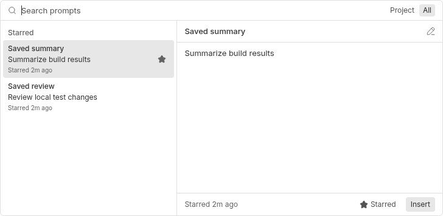
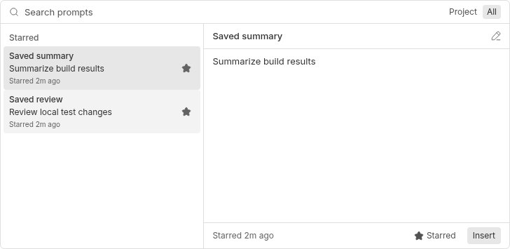
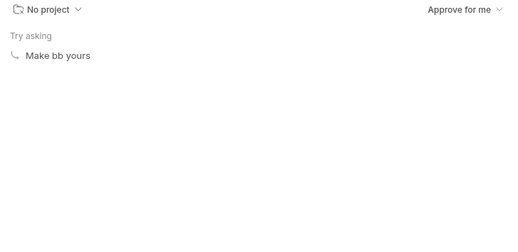
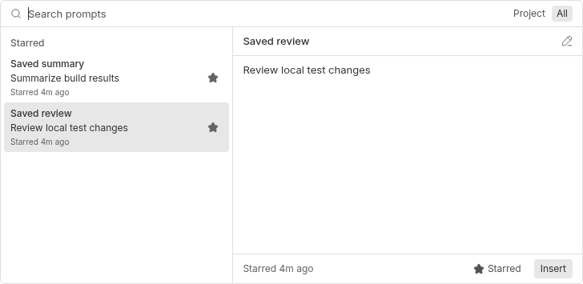

#6029 · Saved prompt stars disappear outside the active row
Verdict: REPRODUCED · Root-cause confidence: high · label: confirmed-repro
1. TL;DR
On a desktop pointer device, a saved prompt can have no visible star even though it remains saved. The row renderer hides the star button whenever the row is not selected, without considering saved state. Moving selection swaps which star is visible, and hovering temporarily reveals the other control. This is a display defect, not spontaneous loss of persisted favorites.
2. Claims vs findings
| Claim | Status | Evidence |
|---|---|---|
| A saved row loses its star outside selection/hover. | Verified | Chromium computes opacity 0 while aria-pressed remains true; screenshots show the missing icon. |
| The visibility condition causes the defect. | Verified | Trusted source checks selection only. The regression fails twice before the repair and passes afterward. |
| Clicking again can remove a favorite. | Supported by source; not separately clicked in this browser run | The hidden control remains named Unstar and dispatches the existing unstar action. Selection movement itself does not change saved state. |
| The behavior applies regardless of input device. | Qualified | The existing hover:none override reveals controls. A desktop hover-capable pointer is required. |
| The reported released bundle was successfully modified. | Unverified | No supplied bundle or patch was executed. Evidence uses trusted main and locally authored changes. |
3. Environment
- Public repository get-bb/bb, main
b143a22860944a96bf183605dfb0ffe58b1de283, bb 0.46.1, built-in Prompt Library 0.1.0. - Linux x86-64, Node 22.19.0, Vitest 4.1.1, jsdom 29.0.1, Chromium 155. No model turns required.
- Fresh checkout-derived dev instance: frontend 15024, server 23024, host daemon 31024, temporary development data.
- Browser Automation local/headless. Chromium launched with
--blink-settings=primaryHoverType=2,availableHoverTypes=2,primaryPointerType=4,availablePointerTypes=4. Verified hover:hover and pointer:fine both true. Default headless no-hover mode masks the bug. - Separate frozen installs and Turbo builds ran in both trusted checkouts. The first full build encountered an SDK build-order race in the unrelated GitHub plugin; retry after SDK completion passed all 67 tasks. The second build passed.
4. Minimal reproduction
Focused repeatable regression
Download regression.patch beside a fresh clone. It adds only a locally authored test to the existing real plugin slot-rendering harness; production remains unchanged. The complete test file is also available.
git clone https://github.com/get-bb/bb.git bb-6029-check cd bb-6029-check git checkout --detach b143a22860944a96bf183605dfb0ffe58b1de283 pnpm install --frozen-lockfile --prefer-offline pnpm exec turbo run build git apply ../regression.patch pnpm exec turbo run test --filter=bb-plugin-bb--prompt-library -- app.test.tsx -t 'keeps saved stars visible'
Expected: saved-star controls stay visible after selection moves to an ordinary history row. Actual on unchanged main:
AssertionError: expected true to be false
expect(button.classList.contains("opacity-0")).toBe(false);
Test Files 1 failed (1)
Tests 1 failed | 21 skipped (22)
The added regression uses existing helpers and the actual popup component:
it("keeps saved stars visible when keyboard selection moves to another prompt", async () => {
const { slot } = render({
recent: [
recentRow("h1", "saved history prompt", "prompt_2"),
recentRow("h2", "ordinary history prompt"),
],
});
const saved = await slot.findByRole("option", { name: /starred prompt/ });
const history = slot.getByRole("option", { name: /saved history prompt/ });
const savedStar = within(saved).getByRole("button", { name: "Unstar" });
const historyStar = within(history).getByRole("button", { name: "Unstar" });
fireEvent.keyDown(searchBox(slot), { key: "ArrowDown" });
fireEvent.keyDown(searchBox(slot), { key: "ArrowDown" });
expect(saved.getAttribute("aria-selected")).toBe("false");
expect(history.getAttribute("aria-selected")).toBe("false");
for (const button of [savedStar, historyStar]) {
expect(button.getAttribute("aria-pressed")).toBe("true");
expect(button.classList.contains("opacity-0")).toBe(false);
}
});
jsdom does not lay out Tailwind CSS. This DOM assertion guards the emitted presentation state; the separate Chromium run verifies actual computed opacity and visual output.
Browser reproduction
- Start
pnpm devin the trusted checkout. Use only its printed addresses, not installed-instance defaults. - Explicitly target the fresh dev server for every source CLI call. For this run:
export BB_SERVER_URL=http://127.0.0.1:23024 export BB_HOST_DAEMON_PORT=31024 pnpm bb:dev plugin enable bb--prompt-library pnpm bb:dev prompts star 'Review local test changes' --title 'Saved review' --json pnpm bb:dev prompts star 'Summarize build results' --title 'Saved summary' --json
- Open the printed frontend URL in a desktop-pointer browser, focus the composer, and press Ctrl+R. Wait for both saved prompts.
- Hover the unselected row, then move the mouse away and press ArrowDown in the search field.
Before ArrowDown: Saved summary is selected with opacity 1; Saved review is unselected with opacity 0. After ArrowDown: Saved summary is unselected with opacity 0; Saved review is selected with opacity 1. Both buttons retain aria-pressed=true.



5. Root cause
isStarred recognizes saved rows and history rows with saved IDs. renderRow calculates that state. But the star button visibility condition ignores it:
!selected && [ "opacity-0 group-hover:opacity-100", HOVER_REVEAL_NO_HOVER_VISIBLE_CLASS, ]
The icon still receives its filled appearance and the button remains pressed/labelled Unstar. Parent opacity makes that correct state invisible outside selection/hover. The no-hover override explains why touch-oriented headless defaults mask the symptom. The toggle handler uses saved state, so acting on an apparently absent star can invoke unstar. No storage, protocol, or server policy change is needed.
6. Proposed fix and verification
Use hover-only disclosure only when neither selected nor starred: !(selected || starred). This preserves selected-row, ordinary unstarred-row and touch behavior. The implementation changes one expression in the existing renderer; there is no dependency, migration, protocol, packaging, or stored-data change.
pnpm exec turbo run test lint typecheck --filter=bb-plugin-bb--prompt-library Test Files 2 passed (2) Tests 50 passed (50) Tasks: 10 successful, 10 total
Lint succeeds with one existing set-state-in-effect warning in untouched code. Both saved buttons have computed opacity 1 after ArrowDown with the repair. The two-file diff is 24 additions and 1 deletion: 25 changed text lines. git diff --check passes and no binary files change.

7. Verification
The same agent created a second clean temporary worktree at the identical trusted commit, completed a separate frozen install/build, applied only the test patch, and repeated the focused Turbo command above. It failed at the same opacity assertion: 1 failed, 21 skipped. See the second-run log. This is a second clean reproduction, not independent verification. It uses an isolated jsdom process with no live ports or persisted dev data. The full browser run was not repeated in the second checkout. No report correction was needed.
8. Related issues and PRs
A prompt/star issue search found no duplicate. No linked or issue-referencing open PR was found in the cross-reference timeline or open-PR search. Issue content was treated as untrusted claims. No issue-provided URL, executable, supplied patch, or linked branch was fetched or run.
9. Appendix
- First expected regression failure
- Second clean expected regression failure
- Full plugin tests, lint and typecheck after repair
- Original computed opacity
- Computed opacity after ArrowDown on trusted main
- Computed opacity after repair
Relevant commands: git fetch origin main; git worktree add --detach <temporary-checkout> b143a22860944a96bf183605dfb0ffe58b1de283; frozen pnpm install; Turbo build; focused tests in both checkouts; pnpm dev; explicit-target CLI setup above; Browser Automation navigation, Ctrl+R, hover and ArrowDown; computed-style inspection and popup-clipped PNG screenshots; full plugin test/lint/typecheck command above; pnpm exec oxfmt --check plugins/prompt-library/app.tsx plugins/prompt-library/app.test.tsx; git diff --check; git diff --numstat origin/main. Logs redact checkout paths. Screenshots contain only synthetic prompt content.